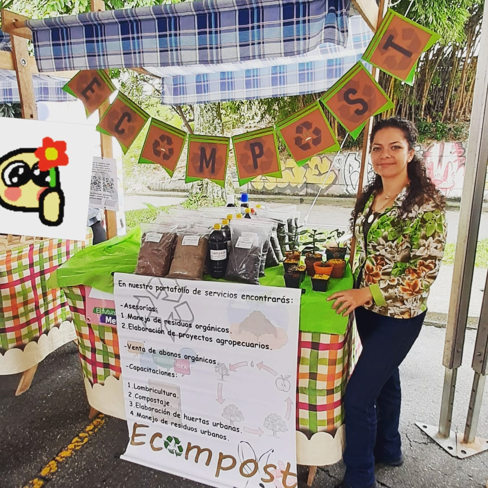

Ecompost
Inicio
Pagos
Tienda en línea
Ecompost
Inicio
Pagos
Tienda en línea
Ecompost es un proyecto que busca disminuir la cantidad de desechos aprovechables que terminan en el relleno sanitario, produciendo materia prima eficiente en la fertilizacion de suelos tanto de cultivos a gran escala como de huerto urbano, de esta manera mejoramos la integridad y salud de las plantas y cuidamos el medio ambiente.
Ecompost nace como una iniciativa que busca mejorar la calidad del suelo que utilizamos en la producción de nuestros alimentos y cosechas, disminuir la producción de residuos basura que no se aprovechan de la mejor manera y ayudar a nuestra comunidad a comprender el efecto ecológico que representamos con nuestras actividades diarias, dicho efecto, muchas veces ignorado por completo y que además, no cuesta demasiado reducirlo en gran medida, por lo cual buscamos fomentar y concientizar el cuidado del medio ambiente, la produccion de alimentos libres limpios y así contribuir con la seguridad alimentaria.
